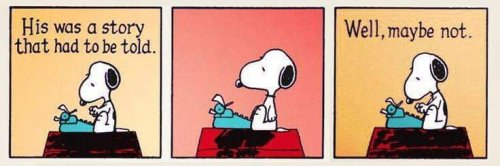

"Have you asked you?" --Byron Katie
The man, proudly proclaiming himself a seeker, intimately asks on my Facebook: “WHAT IS YOUR TEACHING?”
Well, intimately asks me and about 2 dozen others.
It seems I have stumbled unknowingly onto American Idol. I hadn’t realized I’m auditioning.
I reply, “I have nothing for you.”
He doesn’t catch the plural meanings and dismisses me promptly.
He’s annoyed that I don’t tell my surely-fabulous enlightenment story, don’t expound on what life is like now that I’m wise, don’t take vast chunks out of my life to devote to filling a stranger in on the great secrets that worked for me.
He’s annoyed that I feel no obligation to answer simply because he asks.
Rude.
And spared.
Meanwhile, apparently everyone else he asked- every one of those important and less-important leaders in spirituality- answered his demanding questions.
So eager they apparently all are to present themselves as having wisdom, and to tell how they see things.
I don’t get it.
I don’t get the tradition of seekers asking questions of teachers.
I don’t get the value of satsang, where people ask wise ones how things are.
I don’t get spiritual leaders expounding on their origin story, their lineage, or how to see the world and awareness and consciousness, according to that person.
I don’t get collecting sages’ answers, like my new buddy is doing.
What I especially don’t get, is why so-called teachers, answer.
Because exactly whom does it help for answerers to do all the work for the askers?
Do teachers think no one but themselves can find their own way? Are askers too feeble-minded to answer their own questions?
And of course, these wise answers can’t be understood more than intellectually anyway.
Because they’re someone else’s.
Seekers want answers. As long as someone else gives them.
They hand over their agency, sit back and wait to be told how it is.
How easy to become prey to grifters this way.
Why is anyone being asked to carry them?
And why are teachers so eager to do so?
Besides, have seekers not noticed that teacher don't all give the same answers?
Some go through the dark night of the soul, some are suddenly touched with magic, some claim to experience bliss forever, some get it and lose it, some are terrified, some lose the sense of purpose and stew in, “What’s the point.”
It seems consciousness does not find one perfect awakening experience and then pump out replicas and stop being so infinitely creative from here on out.
Which means, despite everyone’s certainty that their way is THE way, experience is completely individual and variable.
So seekers may as well find their own. Since that’s how it’s going to be regardless.
So. You’re a seeker and you want answers?
ASK YOU.
Ask and wait. Ask and answer.
Be extremely literal. Be extremely rigorous. Don’t settle for BS non-answers like, “It feels like I’m right here,” with your hand waving aimlessly in the space 6 inches in front of your forehead.
Where, exactly? Point to it. Literally.
Locate. Is it the forehead, the brain, the body in the chair?
Do bodies- elbows, earlobes, skin- send ideas in the middle of the night, when you’re lying half-asleep in bed?
And that highly-touted sense of self- what knows it’s there? Where exactly is this knower?
Specifically.
Ask, “What actually knows this answer, and how does it know?”
Ask, “Is this a theory or something I can prove?”
Ask, “Where is my proof, other than that I think it, or other than that some teacher said it? How do I know this?”
Accept no vagueness, and you'll probably eliminate answers like, “It’s light. It’s energy. It’s brain, heart, a feeling, awareness.”
Find proof. Find what cares.
Then maybe you can move on to your next answers.
Yours.
Not Krishnamurti’s. Not Byron Katie’s. Not Rupert / Robert / Tony / Ramana / or Nisargadatta’s.
Certainly not mine. Because no amount of me or anyone else saying, “This is how it is,”
Is actually
How it is.
And once your own answers come,
you may find you don't care what anyone else’s are.
Making "seeking"
a no-thing.
Watch Judy on Buddha at the Gas Pump
"You seek the path? I warn you away from my own. It can be the wrong way for you. May each go their own way. I will be no saviour, no lawgiver, no master teacher unto you. You are no longer little children. One should not turn people into sheep, but sheep into people."
--C.G.Jung
"There is nothing you can learn from me or anyone. What then is a Master for? To make you see the uselessness of having one."
--Anthony de Mello
"When the student is truly ready the teacher disappears."
--Lao Tzu
